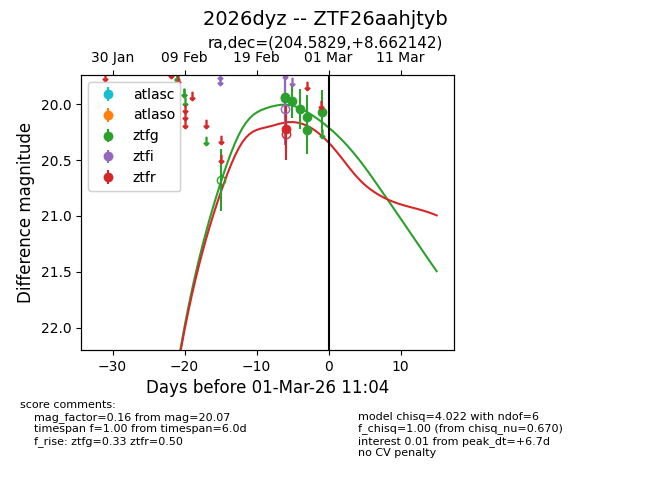
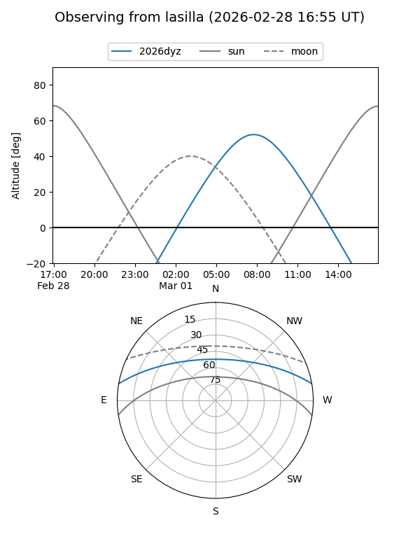
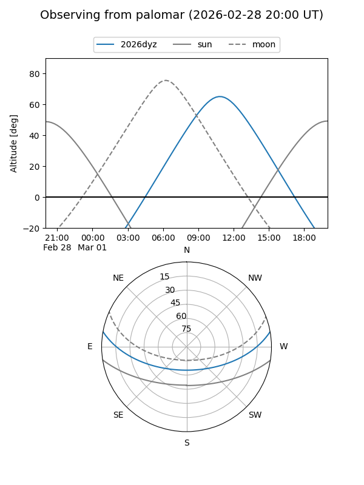
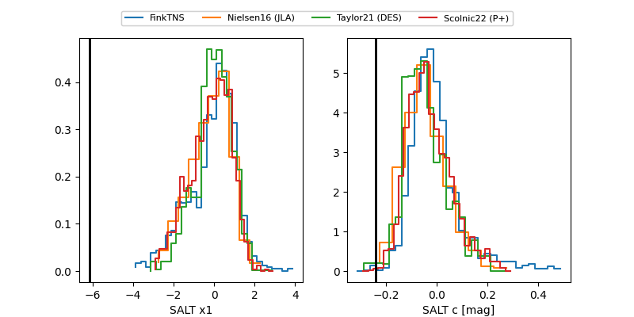

2026dyz
Target 2026dyz at 2026-03-01 11:05
Aliases and brokers:
FINK: link
Lasair: link
ALeRCE: link
TNS: link
YSE: link
alt names
ZTF26aahjtyb (ztf,fink_ztf)
2026dyz (tns,yse)
Coordinates:
equatorial (ra, dec) = 204.5829,+8.66214
equatorial (HMS+DMS) = 13:38:19.89,+08:39:43.71
galactic (l, b) = (336.0995,+68.45940)
Flags:
Photometry:
last ztfg=20.07, ztfr=20.22
7 ztfg, 1 ztfr detections
Lightcurve

Visibility


Additional plots
